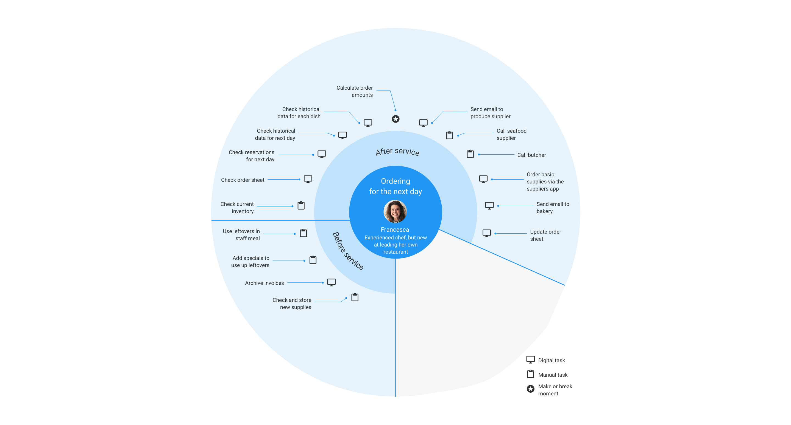
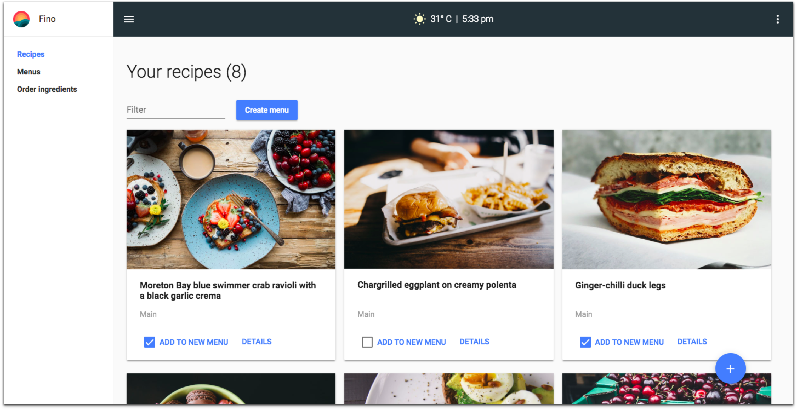
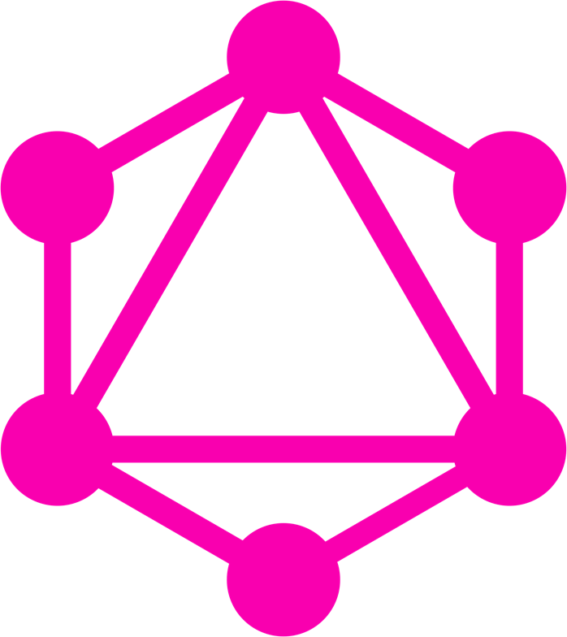
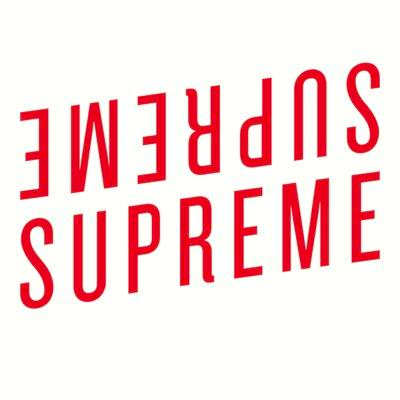
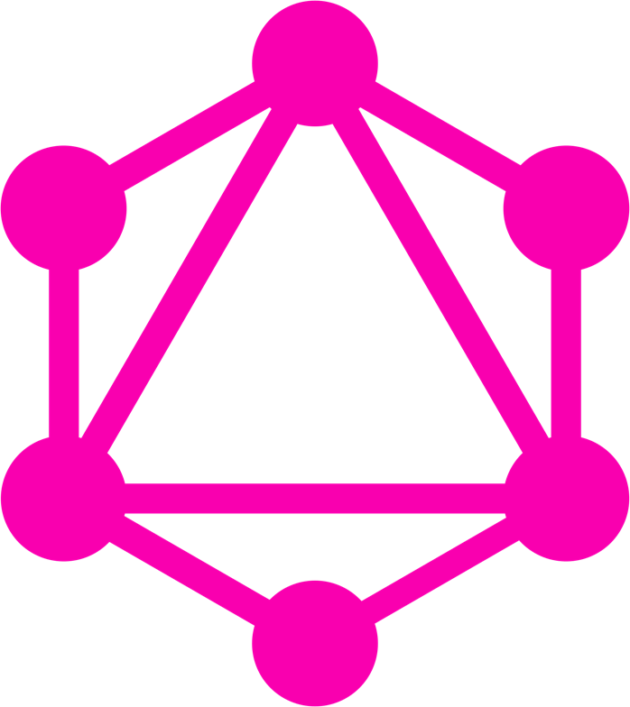
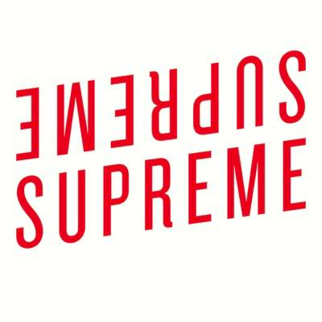

Food waste in restaurants
To better understand food waste in the restaurant industry, I conducted semi-structured interviews with chefs and restaurant managers from 8 restaurants in Brisbane and Melbourne. Through the user research, it became clear that procurement is a complex, time-consuming, and error-prone process that can lead to significant food waste when done poorly.

User research informed a journey map, listing important steps in the procurement process.
Prototype development
Collaborating with chefs from the Brisbane area, I developed the Fino prototype with three objectives in mind: provide relevant data throughout the procurement process, automate time-consuming tasks, and empower less-experienced employees to do procurement.

Example view: All recipe's are listed in Fino's recipe view.
Putting Fino to the test
To evaluate whether Fino can help reduce food waste, we rolled out the software in two participating restaurants in Brisbane. Follow-up interviews showed that Fino reduced the time spent ordering, improved chefs confidence in order amounts, and allowed less-experienced employees to place orders.

Evaluating fino at Otto Restaurant in Brisbane.
 


